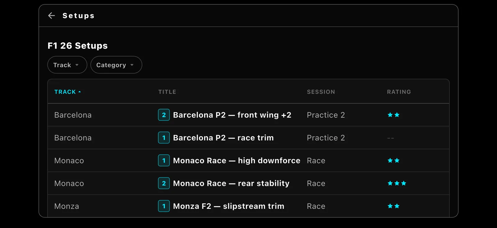
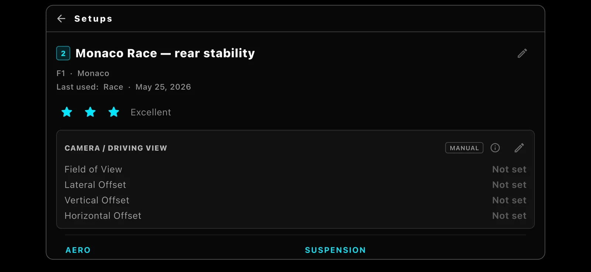

Free
- Every setup you've run, listed by game, then by track, name, rating and session
- Every new setup captured with its session
How it works
JMD captures your setups automatically. Rate them, name them and find the right one again.
You never type a setup in. JMD records the setup you drive in each session and builds your setup library from them. Open it from the Home screen with View Setups, from the Pit Wall's SETUP tab, or from Prepare for Session's setup section.

The library shows one game at a time, under a heading such as F1 26 Setups, so you never load an older game's setup by mistake. When you have setups from more than one game, a game selector sits above the heading. The table lists TRACK, TITLE and RATING, plus SESSION in landscape. It opens sorted by track; tap a column header to sort by it, and tap it again to reverse the order. The filter chips narrow the list by track and car category (F1 or F2).
A rating and a name belong to the setup itself, not to one session. Rate it in Session History and the library shows the same stars, and the other way round. In the library, tap the RATING header to put your best setups first.

On a setup's own screen you can rename it, see how many sessions used it and when it was last used. A CAMERA / DRIVING VIEW section, marked MANUAL, lets you note your field of view and camera offsets. The game doesn't send those values, so you type them in.